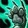

Windwalker Monk 10.0.5 Guide
Introduction
Windwalker Monk is a melee DPS spec that has a tool for nearly every situation and has flexible cooldowns, great utility, and excellent mobility. In Dragonflight, Windwalker Monk is becoming less of the ‘AoE God’ that it had been in Shadowlands due to losing multiplicative scaling with Calculated Strikes but in exchange is shoring up some of its notable weaknesses in the past such as single and two target damage and expanding on their already extensive utility repertoire with new auras that can provide healing taken increased and avoidance
Basics of Windwalker Gameplay
Windwalker Monk is a spec about managing resources and abilities with
cooldowns at the same time. The primary focus is to use

Tiger Palm
to generate Chi for abilities like
 Fists of Fury
and
Fists of Fury
and
 Rising Sun Kick
to use, while not capping on Chi or Energy.
Rising Sun Kick
to use, while not capping on Chi or Energy.
You need to take into consideration the Mastery: Combo Strikes passive which forces the player to spamming the same abilities over and over again.
Advantages / Disadvantages
In the table below, we present the Windwalker Monk's strengths and weaknesses:
| Advantages | Disadvantages |
|---|---|
| + Jack of all trades | - Master of none |
| + Exceptional Mobility | - Lack of immunity |
| + Strong burst | - Poor scaling |